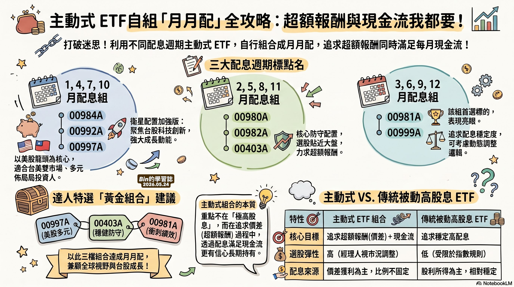

記錄每一個思考的片刻——
關於投資、健康、家庭，
以及退休後真正重要的事。
| 代號 | 名稱 | 類型 | 市場 | 備註 |
|---|---|---|---|---|
| 00878 | 國泰永續高股息 | 台股 | TWSE | 主帳戶核心持股，每季配息 |
| 00919 | 群益台灣精選高息 | 台股 | TWSE | 高息型，注意配息來源 |
| 009814 | 富邦標普500 | 美股 | TPEX | Wei/Kiki S&P500 曝險首選 |
| 00953B | 債券 ETF | 債券 | TWSE | 降低整體波動，防禦配置 |
| 00923 | 台灣高息動能 | 台股 | TWSE | 年輕人長期持有需重新評估 |
打破迷思!利用不同配息週期主動式ET自行組合成月，追求超額報酬 同時滿足每月現金流!

用 VS Code 與 GitHub 建立這個網頁，記錄投資心得與退休生活。 學習 Git 操作，從 clone 到 push，一步一步完成。
重新檢視四帳戶配置，確認 Wei 與 Kiki 的定期定額方向正確。 建議長期投資者減少高息 ETF 比重，增加成長型配置。
完成每日快照、股價更新、除權息記錄、PDF 備份四大腳本。 投資追蹤系統正式上線，每天自動執行。